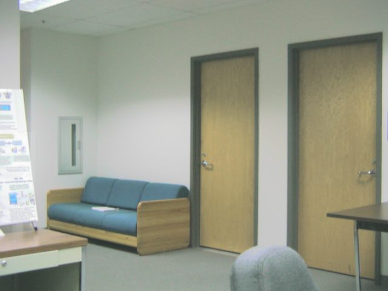
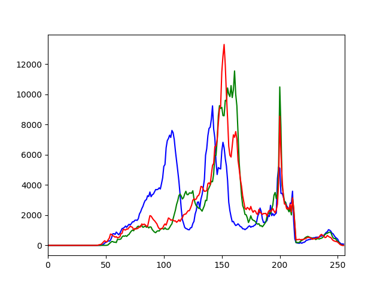
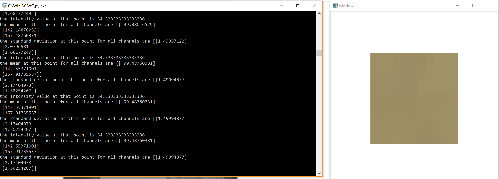
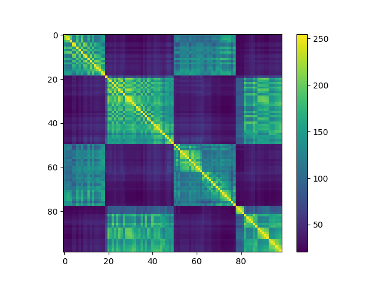
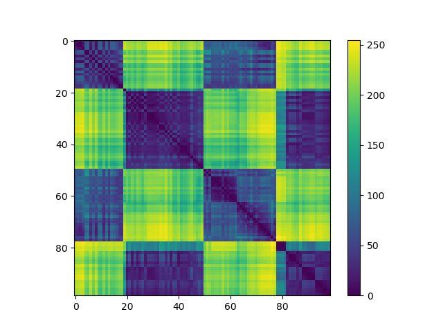

The code for 1st part and 2nd part are
Part 1the source image for first part is
the histogram of it is
the results of the rest of the first part can be seen the code is run as it is a mouse move event. But a screenshot is below
the intersection image of the 99 images is
the chi square image of the 99 images is
